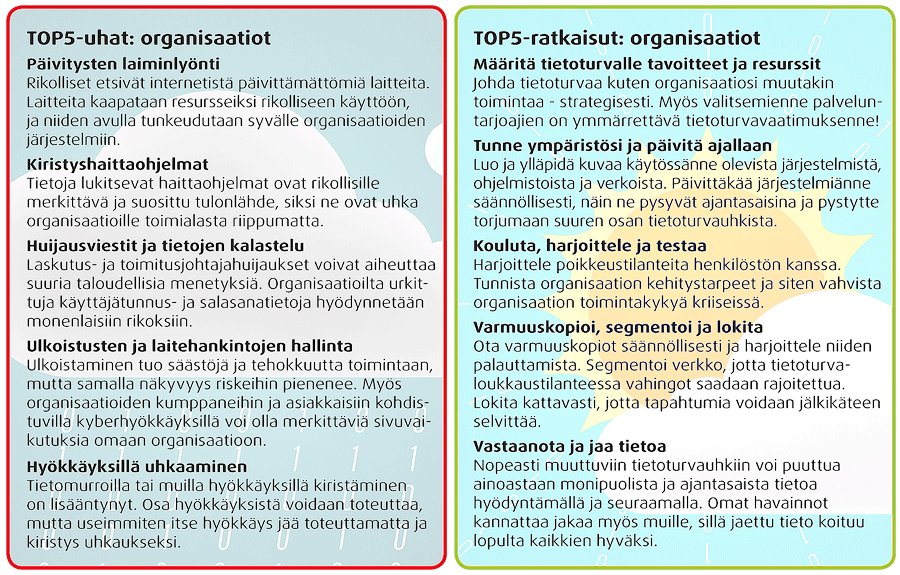
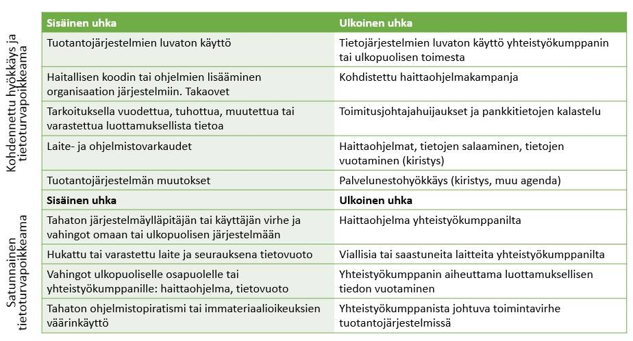
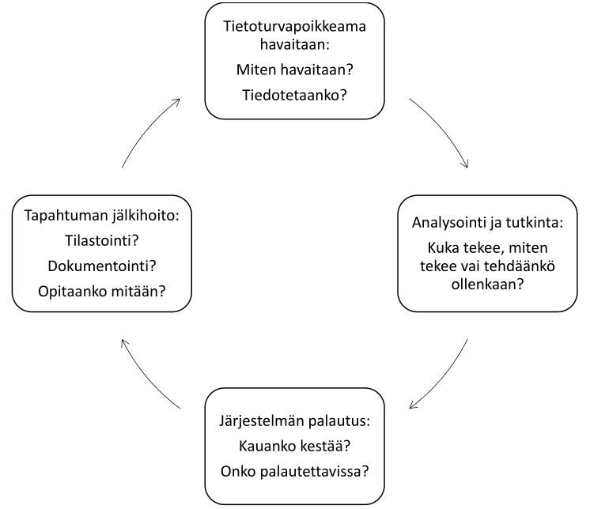

Olennainen osa hyvää tietoturvaa on varautua erilaisiin haasteisiin ja uhkakuviin. Kun vahinko on jo tapahtunut, ei hukkunutta tai varastettua tietoa saada välttämättä takaisin. Yksi tietoturvan isoja haasteita onkin pystyä ennakoimaan mitä saattaa tapahtua seuraavaksi. Hajoaako reitittävä runkokytkin? Katoaako tärkeän pilvipalvelun tarjoaja Internetistä? Salaako haittaohjelma levypalvelimelta kaikki tiedostot? Joutuuko palvelimesi palvelunestohyökkäyksen kohteeksi? Pettääkö varmuuskopiojärjestelmän tietokanta? Joutuuko käyttäjätunnuksia vääriin käsiin? Onko vain sisäiseen käyttöön tarkoitettu versionhallintapalvelin näkyvissä suoraan Internetiin?
Hyvä tietoturva on myös hyvän tietosuojan perusedellytys. Monet hyvän tietoturvan edellyttämät asiat on saavutettavissa järjestelmien järkevällä käytöllä, vakio-ominaisuuksia hyödyntämällä ja tervettä järkeä käyttämällä. Hyvän tietoturvan ei välttämättä tarvitse olla kallista. Kyse on usein vain asenteesta. Varautuminen ja harjoittelu kannattaa.
Hyvään tietoturvaan pyrkiminen maksaa aina itsensä takaisin, koska se tarkoittaa myös parempaa tietosuojaa, IT-ylläpitoa, IT-hallintaprosesseja ja käyttäjien IT-taitojen edistämistä.
Oheinen kuva listaa tyypillisimmät organisaatioita koskevat tietoturvauhat ja ratkaisut (Viestintävirasto):

Viestintäviraston kyberturvallisuuskeskus on myös laatinut
erinomaisen opaskirjan pienyrityksille: TIKKA -
Tietoturvallisuustilanteen kartoitustyökalu pienille
yrityksille. Työkalun
voi ladata täältä.
Ohessa on lyhyesti alkeita yrityksien ja yhteisöjen IT-järjestelmien tietoturvan tason tarkastelemiseksi.
Yleisiä:
Ohessa on listattuna joitakin moderneja tietoturvahaasteita ja listaa läpikäymällä voit arvioida, onko yrityksessäsi tarvetta tietoturvasuunnittelulle, opastukselle tai riskianalyyseille.
Tietoturvapoikkeamiin on syytä varautua harjoittelemalla ja kokeilemalla. Ohessa on kuvattu ja pohdittu tyypillisen tietoturvapoikkeaman kulkua havaitsemisesta lähtien.

Varsinainen tietomurto on saattanut kestää vain hetken, mutta poikkeaman selvittely ja jälkihoito saattaa kestää viikkoja. Mitä paremmin erilaisiin poikkeamiin on varauduttu, sitä nopeammin järjestelmien ja vahinkojen korjaaminen tapahtuu. Tietoturvapoikkeaman selvittelyn helpottamiseksi on olennaista, että järjestelmistä on saatavilla riittävästi tietoa. Kuinka hyvin tiedät mitä tietojärjestelmissä parhaillaan tapahtuu?